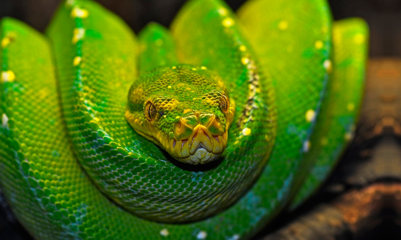

Estas enormes serpientes tienen fama de ser muy glotonas. ¿Te suena la expresión "comer como una boa"? Pues ellas son las responsables. Desde luego, los pobres animales no tienen ninguna culpa, ya que solo ingieren lo que necesitan para vivir. No son venenosas, lo que en absoluto significa que no sean letales... ¡Es mejor permanecer lejos de ellas! Estos ofidios están repartidos por Asia Occidental, Europa Oriental, Oceanía, África Septentrional y la isla de Madagascar.

Sus características más destacables son su gran tamaño y su fuerza, que emplean para ahogar a sus presas